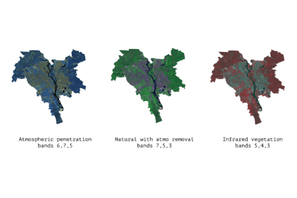

Pay Tool
Companies are disclosing what they pay workers. See how you compare.
Salary Study
Tariffs
Trade Fight Threatens Farm Belt Businesses
Trade Fight
Amazon
A look at how Amazon has grown into a $178 billion-a-year revenue business with online retail
Amazon: The Making of a Giant
Female Olympics
When were women included in Olympic events through the years?
Gender Gap at the Olympics
Winter Olympics
How a lot of little things make an Olympic gold medalist
The Art of the Millisecond

Dead Malls
How the typical mall has changed since the 1990s
The Slow Death of the American Mall

Gift Bag
Live Christmas sales tracker
Where to Bag the Bargains

Cassini
A journey through the probe's key discoveries of the planet and its rings and moons
Cassini’s Last Dance With Saturn
Ukrainian concrete desert
Urban heat island effect and vegetation cover
Ukrainian concrete desert

Euromaidan
The most detailed chronology of the key events during the Euromaidan revolution
Three days before spring

Carpathians Anatomy
Interactive WebGL model based on the Sentinel-2 data
Carpathians Anatomy

Opensat
Open-source Python library for Sentinel-2 and Landsat-8 data
Opensat

The Troll Network
An Interactive network of Russian Propaganda in the Ukrainian segment of Facebook
The Troll Network

Convention Speeches
A visual analysis of the presidential and vice-presidential convention speeches.
Convention Speeches Comparison
Zika Tracker
Realtime visualisation of the reported Zika cases in the US
Zika Tracker

Brexit Maps
Unions, partnerships and coalitions among the European countries
Brexit Maps

Deforestation in Ukraine
Remote sensing project about deforestation in the Ukrainian Carpathians
Deforestation in Ukraine

Yanukovych's Trains
Investigating strory about illegal transportation of the paid protesters during the Euromaidan
Yanukovych's Trains